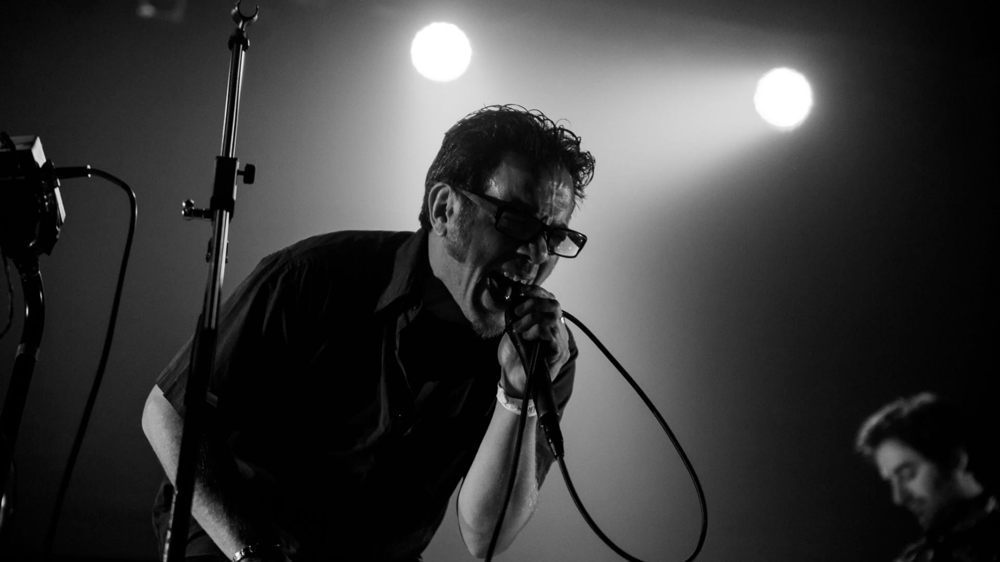

Ante las actuales circunstancias el MONTEVIDEO SOUND CITY se reinventa para transformarse en el primer festival de música de Montevideo pensado y producido exclusivamente para internet. Un programa musical, periodístico, desestructurado, intercala entrevista, sesiones en vivo y recorrerá diferentes experiencias. Más de 8 artistas, más de 4 horas de transmisión ininterrumpida. Uno de los mejores festivales del año para verlo en la comodidad del hogar